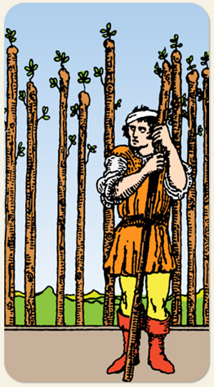

9 de Paus
Necessidade de guardar, de contribuir, de auxiliar quem está em apuros, estar disponível para orientar.
Positivo: Responsabilidade por seus atos, pessoas que realizam coisas por acreditarem em si mesmos, continuar apesar do cansaço, histórias de superação, disciplina.
Negativo: A força a serviço do propósitos estado inferiores, trabalhos forçados, Burnout, realizações prejudiciais, terrorismo, projetos e obras abandonadas, exploração humana, exaustão, um estado de alerta que impede a pessoa de descansar, guerras que oprimem indefesos.
Símbolos:
Cores: Cor, Cor, Cor.